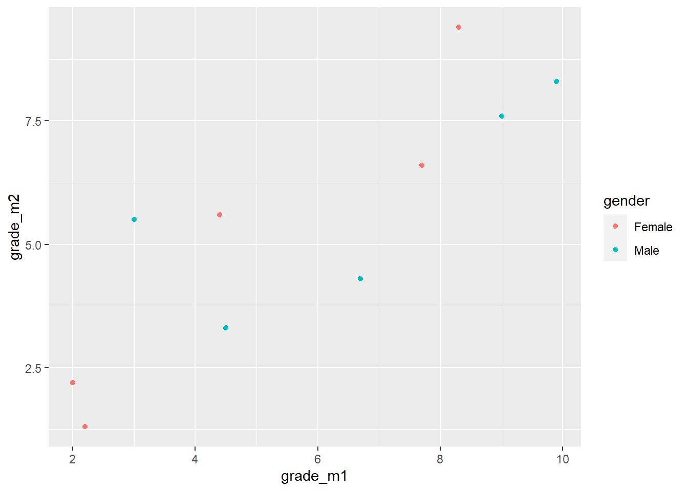
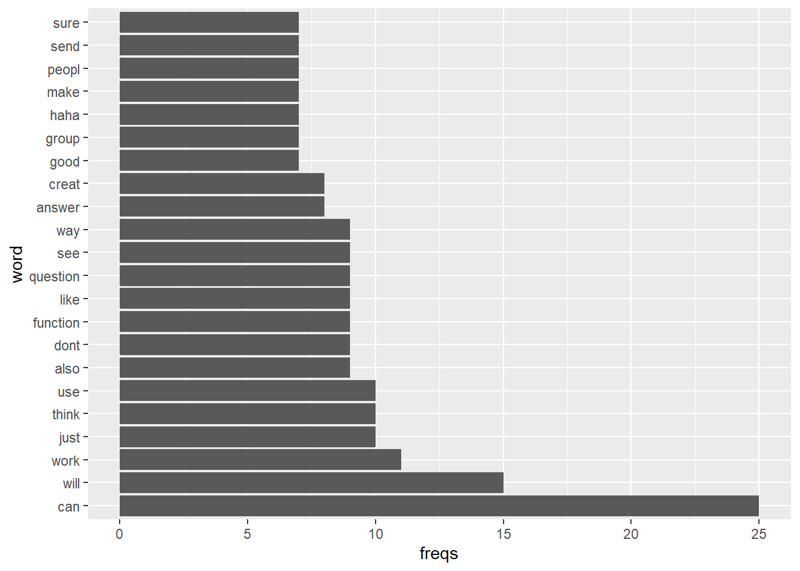
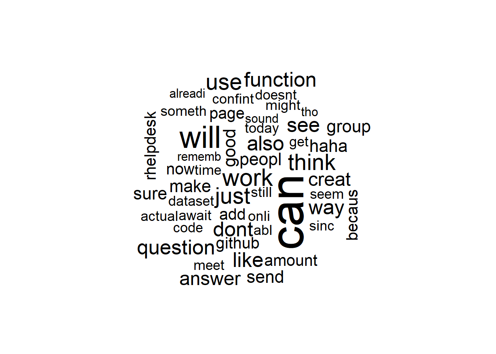
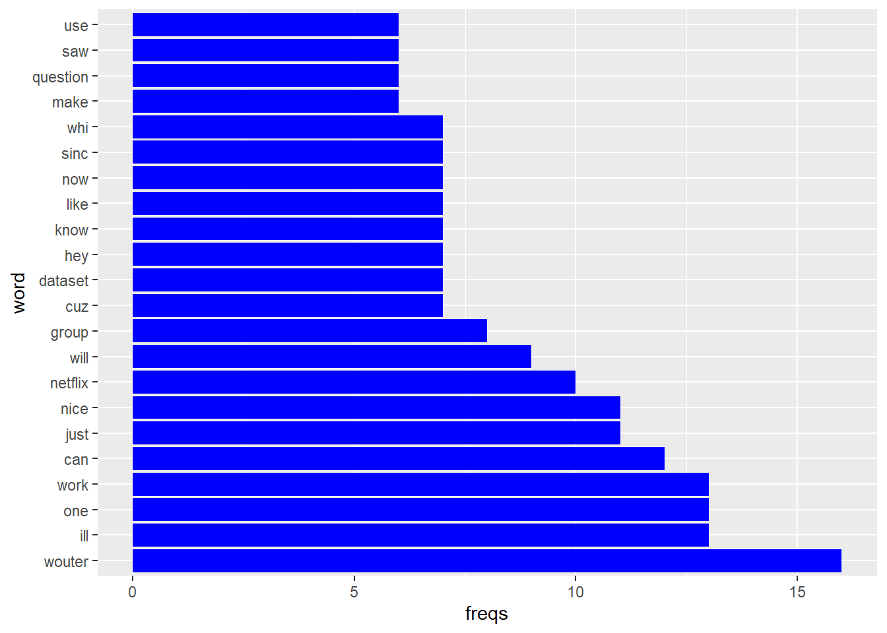
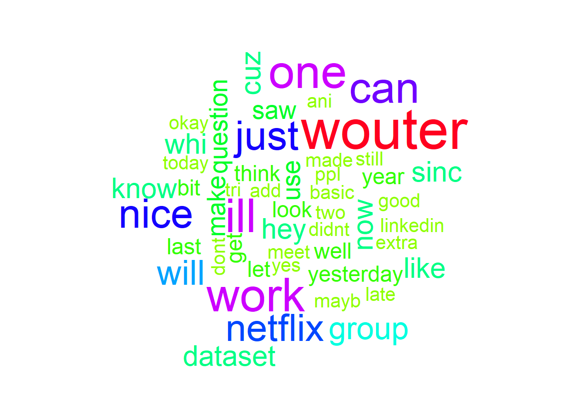
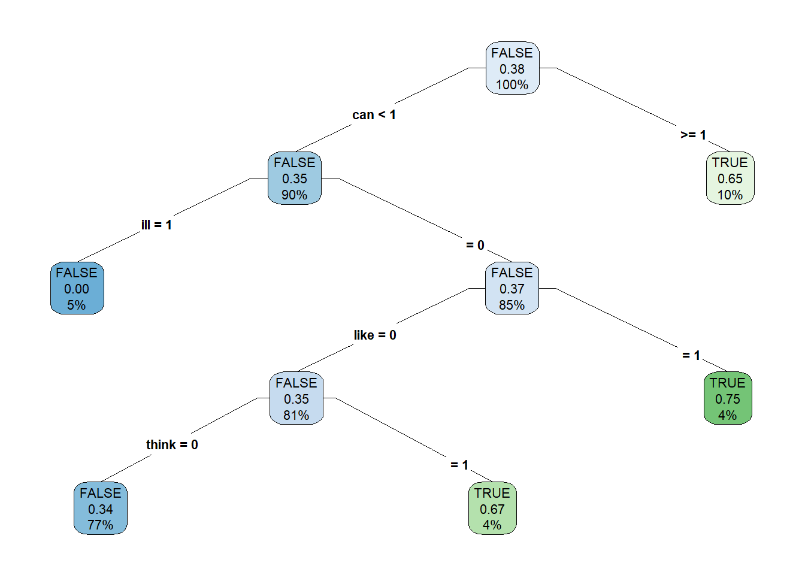
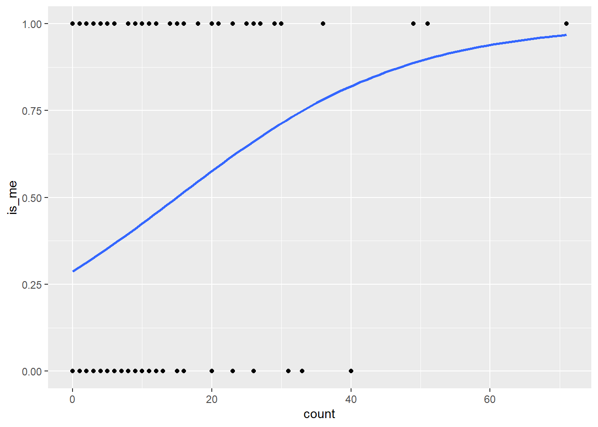

In this assignment you will analyze your own WhatsApp conversations. You will first import the conversation as a corpus, then you will clean it, you will visualize the most used words with a wordcoud and you will use machine learning to identify the author of messages.
There are hints and answers present in the document, but try to only look at them if you get stuck. After you found the answer, it can still be helpfull to look back at the hints to understand your code better.
In this assignment, you will need certain functions that are part of the following packages.
tidyversetmwordcloudrpartrpart.plotjanitorbroomPlease import these packages.
Make sure that you install the package first before importing it.
When installing it, you might see a warning like this
WARNING: Rtools is required to build R packages but is not currently installed. Please download and install the appropriate version of Rtools before proceeding:
https://cran.rstudio.com/bin/windows/Rtools/This does not mean that the installation failed. It is not necessary to install Rtools. If the istallation gives the message below, your installation went successfully
package ‘tidyverse’ successfully unpacked and MD5 sums checkedIf you do not know how to install a package, try googling install packages in R
When importing a package, you might get this message:
-- Attaching packages --------------------------------------- tidyverse 1.3.0 --
v ggplot2 3.3.2 v purrr 0.3.4
v tibble 3.0.3 v dplyr 1.0.2
v tidyr 1.1.2 v stringr 1.4.0
v readr 1.4.0 v forcats 0.5.0
-- Conflicts ------------------------------------------ tidyverse_conflicts() --
x dplyr::filter() masks stats::filter()
x dplyr::lag() masks stats::lag()This does not mean the import failed. It just means that R imports several other packagestoo. These are packages that tidyverse needs to operate (dependencies). Sometimes, the same function name is used in multiple packages. That means that R will overwrite one function with another. These are conflicts. This is usually not a problem however, so you don’t need to do anything with that.
If you do not know how to import a package, try googling import packages in R
If you have not used this library before, first install the package on your computer
install.packages("tidyverse")
install.packages("tm")
install.packages("wordcloud")
install.packages("rpart")
install.packages("rpart.plot")
install.packages("janitor")
install.packages("broom")Then you can import them
library(tidyverse)
## -- Attaching packages --------------------------------------- tidyverse 1.3.0 --
## v ggplot2 3.3.2 v purrr 0.3.4
## v tibble 3.0.4 v dplyr 1.0.2
## v tidyr 1.1.2 v stringr 1.4.0
## v readr 1.4.0 v forcats 0.5.0
## -- Conflicts ------------------------------------------ tidyverse_conflicts() --
## x dplyr::filter() masks stats::filter()
## x dplyr::lag() masks stats::lag()
library(tm)
## Loading required package: NLP
##
## Attaching package: 'NLP'
## The following object is masked from 'package:ggplot2':
##
## annotate
library(wordcloud)
## Loading required package: RColorBrewer
library(rpart)
library(rpart.plot)
library(janitor)
##
## Attaching package: 'janitor'
## The following objects are masked from 'package:stats':
##
## chisq.test, fisher.test
library(broom)Go to a WhatsApp conversation with someone and export it. You can do that by pressing the 3 dots in the top-right corner, them press More and then press Export chat. Sadly, this feature isn’t available in Germany. If you are in Germany, please ask someone else to export a chat history for you.
Then you can send the exported file to your computer, using e-mail, for example.
Select the file below to convert it to a corpus that can be used in R. This can take some time, especially if you have a long history.
The conversation will take place locally, so your file will not be uploaded or stored on any server.
Please unzip the resulted file and copy the file location. For each person in the conversation, you will now have a folder with for each message they’ve sent a text-file.
Save the paths of the two folders with text files you have now in two variables, and use those variables to import the files in those folders as a corpus
If your path contains any backslashes (\), you need to replace them with forward slashes (/) or double backslashes (\\)
You can check if the directory path is correct using the dir() command. If the path is correct, this will give you a list of all filenames in the folder
path <- "C:\\fakepath"
dir(path)You need to import the folder for each author separately
Take a look at what you did in the tutorial about Text mining introduction. Is there any code in there you can use?
Take a look at this code from that tutorial, and try to modify it for your own code
# we can do that directly;
path_fake <- "/Users/stephanievandenberg/Desktop/News/FakeNews"
# note that I'm using a Mac, and my username is "stephanievandenberg".
# I've created a 'News' folder on the desktop into which I've extracted the folders
# with the fake and real news articles.
# For Windows PCs, the path will be something like
# "C:/Users/YourUserName/Desktop/News/FakeNews".
# You can also use "C:\\Users\\YourUserName\\Desktop\\News\\FakeNews"
# confirm that the fake articles are indeed in this folder;
dir(path_fake)
# create a corpus `VCorpus( ... )` from a folder (directory) source `DirSource( ... )`
fake_corpus <- VCorpus(DirSource(path_fake))
# get a path to the 'real news' data
path_real <- "/Users/stephanievandenberg/Desktop/News/RealNews"
# check the path
dir(path_real)
# generate the real corpus
real_corpus <- VCorpus(DirSource(path_real))# Set the path of the folders
path_a <- "C:\\fakepath\\WhatsApp Chat with Ioana Frîncu\\Wouter Stoter"
path_b <- "C:\\fakepath\\WhatsApp Chat with Ioana Frîncu\\Ioana Frîncu"
# Check content of the folders
dir(path_a)
dir(path_b)
#Import the content of the folders as a corpus
corpus_a <- VCorpus(DirSource(path_a))
corpus_b <- VCorpus(DirSource(path_b))Try to get the file list from your first corpus
Take a look at what you did in the tutorial about Text mining introduction. Is there any code in there you can use?
You can use the ‘summary()’ function to get the summary of the corpus. You can type ?summary to find out how this function works.
Take a look at this code from that tutorial, and try to modify it for your own code
# check contents of the corpus
summary(fake_corpus)summary(corpus_a)## Length Class Mode
## 10_15_20, 14_34.txt 2 PlainTextDocument list
## 10_15_20, 14_35 (1).txt 2 PlainTextDocument list
## 10_21_20, 10_47.txt 2 PlainTextDocument list
## 10_31_20, 12_38.txt 2 PlainTextDocument list
## 10_31_20, 15_37.txt 2 PlainTextDocument list
## 10_31_20, 15_56.txt 2 PlainTextDocument list
## 11_1_20, 10_14.txt 2 PlainTextDocument list
## 11_10_20, 18_34.txt 2 PlainTextDocument list
## 11_10_20, 18_39.txt 2 PlainTextDocument list
## 11_10_20, 18_40 (1).txt 2 PlainTextDocument list
## 11_10_20, 18_44.txt 2 PlainTextDocument list
## 11_12_20, 20_24.txt 2 PlainTextDocument list
## 11_12_20, 20_25 (1).txt 2 PlainTextDocument list
## 11_12_20, 20_27.txt 2 PlainTextDocument list
## 11_12_20, 20_51.txt 2 PlainTextDocument list
## 11_12_20, 22_59.txt 2 PlainTextDocument list
## 11_13_20, 00_46.txt 2 PlainTextDocument list
## 11_13_20, 08_06.txt 2 PlainTextDocument list
## 11_13_20, 12_40.txt 2 PlainTextDocument list
## 11_14_20, 12_43 (1).txt 2 PlainTextDocument list
## 11_14_20, 14_24.txt 2 PlainTextDocument list
## 11_14_20, 14_41.txt 2 PlainTextDocument list
## 11_14_20, 14_49.txt 2 PlainTextDocument list
## 11_14_20, 14_50.txt 2 PlainTextDocument list
## 11_16_20, 13_18.txt 2 PlainTextDocument list
## 11_16_20, 13_21.txt 2 PlainTextDocument list
## 11_16_20, 17_59.txt 2 PlainTextDocument list
## 11_16_20, 23_40.txt 2 PlainTextDocument list
## 11_16_20, 23_53 (1).txt 2 PlainTextDocument list
## 11_16_20, 23_53 (2).txt 2 PlainTextDocument list
## 11_17_20, 08_56 (1).txt 2 PlainTextDocument list
## 11_17_20, 08_56.txt 2 PlainTextDocument list
## 11_17_20, 13_13 (1).txt 2 PlainTextDocument list
## 11_17_20, 13_15 (3).txt 2 PlainTextDocument list
## 11_17_20, 18_07.txt 2 PlainTextDocument list
## 11_18_20, 10_00 (1).txt 2 PlainTextDocument list
## 11_18_20, 10_01 (1).txt 2 PlainTextDocument list
## 11_18_20, 19_42.txt 2 PlainTextDocument list
## 11_19_20, 08_02.txt 2 PlainTextDocument list
## 11_19_20, 09_47 (2).txt 2 PlainTextDocument list
## 11_19_20, 10_15.txt 2 PlainTextDocument list
## 11_19_20, 10_16 (1).txt 2 PlainTextDocument list
## 11_19_20, 10_20 (1).txt 2 PlainTextDocument list
## 11_19_20, 10_20.txt 2 PlainTextDocument list
## 11_19_20, 10_25.txt 2 PlainTextDocument list
## 11_19_20, 10_28 (1).txt 2 PlainTextDocument list
## 11_19_20, 10_38 (1).txt 2 PlainTextDocument list
## 11_19_20, 10_42 (1).txt 2 PlainTextDocument list
## 11_19_20, 10_57 (1).txt 2 PlainTextDocument list
## 11_19_20, 10_57.txt 2 PlainTextDocument list
## 11_19_20, 11_01.txt 2 PlainTextDocument list
## 11_19_20, 11_05 (1).txt 2 PlainTextDocument list
## 11_19_20, 17_39 (2).txt 2 PlainTextDocument list
## 11_19_20, 17_39.txt 2 PlainTextDocument list
## 11_19_20, 17_40.txt 2 PlainTextDocument list
## 11_19_20, 17_42.txt 2 PlainTextDocument list
## 11_19_20, 18_54.txt 2 PlainTextDocument list
## 11_19_20, 19_14 (1).txt 2 PlainTextDocument list
## 11_19_20, 19_14 (2).txt 2 PlainTextDocument list
## 11_19_20, 19_15 (1).txt 2 PlainTextDocument list
## 11_2_20, 13_50.txt 2 PlainTextDocument list
## 11_2_20, 13_53.txt 2 PlainTextDocument list
## 11_2_20, 14_06.txt 2 PlainTextDocument list
## 11_20_20, 11_30 (1).txt 2 PlainTextDocument list
## 11_20_20, 11_30.txt 2 PlainTextDocument list
## 11_20_20, 11_32 (5).txt 2 PlainTextDocument list
## 11_20_20, 11_32.txt 2 PlainTextDocument list
## 11_20_20, 11_33.txt 2 PlainTextDocument list
## 11_24_20, 15_13.txt 2 PlainTextDocument list
## 11_25_20, 09_07.txt 2 PlainTextDocument list
## 11_25_20, 11_56.txt 2 PlainTextDocument list
## 11_25_20, 21_54 (1).txt 2 PlainTextDocument list
## 11_25_20, 21_54.txt 2 PlainTextDocument list
## 11_26_20, 12_18.txt 2 PlainTextDocument list
## 11_26_20, 12_19.txt 2 PlainTextDocument list
## 11_26_20, 19_09.txt 2 PlainTextDocument list
## 11_26_20, 19_10 (1).txt 2 PlainTextDocument list
## 11_26_20, 19_10 (2).txt 2 PlainTextDocument list
## 11_27_20, 13_42.txt 2 PlainTextDocument list
## 11_27_20, 17_13.txt 2 PlainTextDocument list
## 11_27_20, 17_34 (1).txt 2 PlainTextDocument list
## 11_27_20, 17_34 (2).txt 2 PlainTextDocument list
## 11_27_20, 17_34 (3).txt 2 PlainTextDocument list
## 11_27_20, 17_34 (4).txt 2 PlainTextDocument list
## 11_27_20, 17_35.txt 2 PlainTextDocument list
## 11_27_20, 17_37 (4).txt 2 PlainTextDocument list
## 11_27_20, 17_39 (1).txt 2 PlainTextDocument list
## 11_28_20, 21_22.txt 2 PlainTextDocument list
## 11_28_20, 21_30.txt 2 PlainTextDocument list
## 11_28_20, 21_44.txt 2 PlainTextDocument list
## 11_28_20, 21_48 (1).txt 2 PlainTextDocument list
## 11_28_20, 21_50.txt 2 PlainTextDocument list
## 11_28_20, 21_51 (2).txt 2 PlainTextDocument list
## 11_28_20, 21_51.txt 2 PlainTextDocument list
## 11_28_20, 21_52.txt 2 PlainTextDocument list
## 11_28_20, 21_54.txt 2 PlainTextDocument list
## 11_28_20, 21_56 (1).txt 2 PlainTextDocument list
## 11_28_20, 21_56 (2).txt 2 PlainTextDocument list
## 11_28_20, 21_57 (1).txt 2 PlainTextDocument list
## 11_28_20, 21_57.txt 2 PlainTextDocument list
## 11_28_20, 22_00.txt 2 PlainTextDocument list
## 11_3_20, 14_50.txt 2 PlainTextDocument list
## 11_3_20, 16_41.txt 2 PlainTextDocument list
## 11_4_20, 13_42 (1).txt 2 PlainTextDocument list
## 11_4_20, 13_42.txt 2 PlainTextDocument list
## 11_4_20, 14_15.txt 2 PlainTextDocument list
## 12_1_20, 16_24.txt 2 PlainTextDocument list
## 12_1_20, 16_45.txt 2 PlainTextDocument list
## 12_2_20, 09_16 (1).txt 2 PlainTextDocument list
## 12_2_20, 10_11.txt 2 PlainTextDocument list
## 4_30_20, 23_23.txt 2 PlainTextDocument list
## 9_22_20, 16_04.txt 2 PlainTextDocument list
## 9_22_20, 16_12.txt 2 PlainTextDocument list
## 9_29_20, 12_59.txt 2 PlainTextDocument list
## 9_29_20, 13_10.txt 2 PlainTextDocument list
## 9_29_20, 13_31.txt 2 PlainTextDocument list
## 9_29_20, 13_32 (1).txt 2 PlainTextDocument list
## 9_29_20, 13_32 (2).txt 2 PlainTextDocument list
## 9_7_20, 11_53.txt 2 PlainTextDocument listTry to read the metadata from the first 5 documents in the corpus, and get the full metadata including content of the first document.
Take a look at what is done in the introduction to Text mining. Is there any code in there you can use?
You can use the ‘inspect()’ function to get the summary of the corpus. You can type ?inspect to find out how this function works.
Take a look at this code from that tutorial, and try to modify it for your own code
## The function inspect() displays detailed information on a corpus (or a
## term-document matrix, or a text document)
inspect(acq[1:2]) # information about the first text
inspect(acq[[1]]) # the first text inspect(corpus_a[1:5])## <<VCorpus>>
## Metadata: corpus specific: 0, document level (indexed): 0
## Content: documents: 5
##
## [[1]]
## <<PlainTextDocument>>
## Metadata: 7
## Content: chars: 63
##
## [[2]]
## <<PlainTextDocument>>
## Metadata: 7
## Content: chars: 4
##
## [[3]]
## <<PlainTextDocument>>
## Metadata: 7
## Content: chars: 58
##
## [[4]]
## <<PlainTextDocument>>
## Metadata: 7
## Content: chars: 114
##
## [[5]]
## <<PlainTextDocument>>
## Metadata: 7
## Content: chars: 40inspect(corpus_a[[1]])## <<PlainTextDocument>>
## Metadata: 7
## Content: chars: 63
##
## Wednesday the 28th I'm available, so I'm totally okay with thatSometimes, you just only want the content, without the metadata. Try to do that for the first file.
Take a look at what is done in the introduction to Text mining. Is there any code in there you can use?
You can use the ‘writeLines()’ function to get the summary of the corpus. You can type ?writeLines to find out how this function works.
Take a look at this code from that tutorial, and try to modify it for your own code
writeLines(as.character(acq[[1]])) # the plain text onlywriteLines(as.character(corpus_a[[1]]))## Wednesday the 28th I'm available, so I'm totally okay with thatNow explore the other corpus too in the same way
Take a look at the code from the previous questions, and modify it for this question
summary(corpus_b) #View file list
inspect(corpus_b[1:5]) #Information about the first few files
inspect(corpus_b[[1]]) #The first text
writeLines(as.character(corpus_b[[1]])) #The plain text onlyBefore we can analyze the data, we need to clean it, so it can be analyzed easily. First we are gonna clean the first dataset, and then at the end we can clean the other one too
You want to make sure that different forms of the same word (e.g. walk, walking, walked, walks) get recognized as the same word. Therefore, you can stem the words in the documents in your corpus. This will bring every word back to it’s stem. So walking, walked and walks all become walk. Try to perform this stemming on all documents in the first corpus. Check if you did it correctly by printing the first document.
If you want to perform a content transformation on all documents in a corpus, you can use the tm_map() function. Try to find out how this function works using ?tm_map.
You can check if the stemming went correctly by looking at the first document. You can do that the same way as you did in 3.3, by using the following code:
writeLines(as.character(corpus_a[[1]]))Take a look at what is done in the introduction to Text mining. Is there any code in there you can use?
Take a look at this code from that tutorial, and try to modify it for your own code
## 2. Stem words in a text document using Porter's stemming algorithm
acq <- acq %>%
tm_map(stemDocument)corpus_a <- corpus_a %>%
tm_map(stemDocument)
# Check first document
writeLines(as.character(corpus_a[[1]]))## Wednesday the 28th I'm available, so I'm total okay with thatWhen analyzing, you don’t want the punctuation to influence the analysis. For example, you want "Yay!" and "Yay." to be seen as the same word. Therefore, you can remove all the punctuation from the documents. Try to do this on all documents in the first corpus. Check if you did it correctly by printing the first document.
Look at what you did in the previous question, and try to modify that code to remove the punctuation, instead of stemming the document.
Take a look at this code from that tutorial, and try to modify it for your own code
## 3. Remove punctuation from the text
acq <- acq %>%
tm_map(removePunctuation)corpus_a <- corpus_a %>%
tm_map(removePunctuation)
# Check first document
writeLines(as.character(corpus_a[[1]]))## Wednesday the 28th Im available so Im total okay with thatNumbers can also influence your results. Therefore, you can also remove all numbers from the documents. Try to do this on all documents in the first corpus. Check if you did it correctly by printing the first document.
Look at what you did in the previous question, and try to modify that code to remove the punctuation, instead of stemming the document.
Take a look at this code from that tutorial, and try to modify it for your own code
## 4. Remove numbers from the text
acq <- acq %>%
tm_map(removeNumbers)corpus_a <- corpus_a %>%
tm_map(removeNumbers)
# Check first document
writeLines(as.character(corpus_a[[1]]))## Wednesday the th Im available so Im total okay with thatCapital letters can also screw up your analysis. For example, you don’t want "Hello" and "hello" to be seen as different words. Therfore, you can change the full text to lowercase. Try to do this on all documents in the first corpus. Check if you did it correctly by printing the first document.
Look at what you did in the previous questions, and try to modify that code to remove the punctuation, instead of stemming the document.
The function tolower() can be used on strings to change them to lowercase. However, this function can not be used directly on the documents in your corpus. Therefore you can use the content_transformer() function to modify normal functions so they can be used on the documents on your corpus.
Take a look at this code from that tutorial, and try to modify it for your own code
## 1. translate upper case to lower case letters
acq <- acq %>%
tm_map(content_transformer(tolower))corpus_a <- corpus_a %>%
tm_map(content_transformer(tolower))
# Check first document
writeLines(as.character(corpus_a[[1]]))## wednesday the th im available so im total okay with thatCertain words are used very often in language, but don’t actually tell you anything about the content of the text, like the or a. We call these words stopwords. These words aren’t interesting for your analysis and therfore you can remove them. Try to do this on all documents in the first corpus. Check if you did it correctly by printing the first document.
Look at what you did in the previous questions, and try to modify that code to remove the punctuation, instead of stemming the document.
To get a list of all stopwords in English, you can use the command below. Then you can use this list to remove these words in all documents.
stopwords("english")## [1] "i" "me" "my" "myself" "we"
## [6] "our" "ours" "ourselves" "you" "your"
## [11] "yours" "yourself" "yourselves" "he" "him"
## [16] "his" "himself" "she" "her" "hers"
## [21] "herself" "it" "its" "itself" "they"
## [26] "them" "their" "theirs" "themselves" "what"
## [31] "which" "who" "whom" "this" "that"
## [36] "these" "those" "am" "is" "are"
## [41] "was" "were" "be" "been" "being"
## [46] "have" "has" "had" "having" "do"
## [51] "does" "did" "doing" "would" "should"
## [56] "could" "ought" "i'm" "you're" "he's"
## [61] "she's" "it's" "we're" "they're" "i've"
## [66] "you've" "we've" "they've" "i'd" "you'd"
## [71] "he'd" "she'd" "we'd" "they'd" "i'll"
## [76] "you'll" "he'll" "she'll" "we'll" "they'll"
## [81] "isn't" "aren't" "wasn't" "weren't" "hasn't"
## [86] "haven't" "hadn't" "doesn't" "don't" "didn't"
## [91] "won't" "wouldn't" "shan't" "shouldn't" "can't"
## [96] "cannot" "couldn't" "mustn't" "let's" "that's"
## [101] "who's" "what's" "here's" "there's" "when's"
## [106] "where's" "why's" "how's" "a" "an"
## [111] "the" "and" "but" "if" "or"
## [116] "because" "as" "until" "while" "of"
## [121] "at" "by" "for" "with" "about"
## [126] "against" "between" "into" "through" "during"
## [131] "before" "after" "above" "below" "to"
## [136] "from" "up" "down" "in" "out"
## [141] "on" "off" "over" "under" "again"
## [146] "further" "then" "once" "here" "there"
## [151] "when" "where" "why" "how" "all"
## [156] "any" "both" "each" "few" "more"
## [161] "most" "other" "some" "such" "no"
## [166] "nor" "not" "only" "own" "same"
## [171] "so" "than" "too" "very"Take a look at this code from that tutorial, and try to modify it for your own code
## remove all words from the list stopwords("english")
acq <- acq %>%
tm_map(removeWords, stopwords("english"))corpus_a <- corpus_a %>%
tm_map(removeWords, stopwords("english"))
# Check first document
writeLines(as.character(corpus_a[[1]]))## wednesday th im available im total okayBecause of all the words we’ve removed, we might now have multiple spaces after each other, because the words in between them have disappeared. Try to change all these double spaces to just one space. Try to do this on all documents in the first corpus. Check if you did it correctly by printing the first document.
Look at what you did in the previous questions, and try to modify that code to remove the punctuation, instead of stemming the document.
Take a look at what you did in the tutorial about Statistical learning. Is there any code in there you can use?
Take a look at this code from that tutorial, and try to modify it for your own code
## 6. Remove too many spaces
corpus <- corpus %>%
tm_map(stripWhitespace)corpus_a <- corpus_a %>%
tm_map(stripWhitespace)
# Check first document
writeLines(as.character(corpus_a[[1]]))## wednesday th im available im total okayLastly, there are some special characters that can screw up your analysis too. You can also remove those. Try to do this on all documents in the first corpus. Check if you did it correctly by printing the first document.
Take a look at what you did in the tutorial about Statistical learning. Is there any code in there you can use?
Take a look at this code from that tutorial, and try to modify it for your own code
## 6. Remove too many spaces
corpus <- corpus %>%
tm_map(stripWhitespace)corpus_a <- corpus_a %>%
tm_map(content_transformer(iconv), from = "latin1", to = "ASCII", sub = "" )
# Check first document
writeLines(as.character(corpus_a[[1]]))## wednesday th im available im total okayNow that you’ve cleaned the first dataset, you also need to clean the second dataset. Try to do that using the commands you also used on the first dataset. You can try to do all commands at once using the pipe-operator (%>%). Check if everything went correctly by looking at the fist document.
The pipe-operator (%>%) can string multiple commands together. For example, if I want to stem the document and remove the punctuation at once, i can do:
corpus_b <- corpus_b %>%
tm_map(stemDocument) %>%
tm_map(removePunctuation)corpus_b <- corpus_b %>%
tm_map(stemDocument) %>% #Stemming words
tm_map(removePunctuation) %>% #Remove punctuation
tm_map(removeNumbers) %>% #Remove numbers
tm_map(content_transformer(tolower)) %>% #Change to lowercase
tm_map(removeWords, stopwords("English")) %>% #Remove stopwords
tm_map(content_transformer(iconv), from = "latin1", to = "ASCII", sub = "" ) %>% #Remove special characters
tm_map(stripWhitespace) #Remove additional whitespace
# Check first document
writeLines(as.character(corpus_b[[1]]))## hey wouterNow we want to find out how often each word occurs in each corpus so we can make a nice overview of that and compare them.
Our fist step is converting our corpus to a Document Term Matrix. This matrix contains all the documents in the rows and all possible words in the collumns. Then in each cell, it has the number of times that word occurs in that document. Try to do make such a matrix for the first corpus.
Take a look at what you did in the tutorial about Text mining introduction. Is there any code in there you can use?
Take a look at this code from that tutorial, and try to modify it for your own code
# get document term matrices
fake_dtm <- DocumentTermMatrix(fake_corpus)
real_dtm <- DocumentTermMatrix(real_corpus)dtm_a <- DocumentTermMatrix(corpus_a)To get the total frequencies from this Document Term Matrix all we need to do is take the sum for every column, since every row contains the amount of times the word occurs in that document. However, we cant perform this action immediately on a Document Term Matrix, so we need to convert it to a normal matrix first.
To convert a DTM to a normal matrix you can use the as.matrix() function. You can use ?as.matrix to find out how it works.
To get the sum of every column in a matrix you can use the colSums() function. You can use ?colSums to find out how it works.
The pipe-operator (%>%) can string multiple commands together. That way you can string both functions together
Take a look at what you did in the tutorial about Text mining introduction. Is there any code in there you can use?
Take a look at this code from that tutorial, and try to modify it for your own code
# get frequencies
fake_freqs <- fake_dtm %>%
as.matrix() %>%
colSums()
real_freqs <- real_dtm %>%
as.matrix() %>%
colSums()freqs_a <- dtm_a %>%
as.matrix() %>%
colSums()Because we would like to know which words are most frequent, we want to sort this by frequency. We want the most frequent words first, so we want to sort it in decreasing order.
To sort we can use the sort() function. Use ?sort to find out how this function works, and look at the arguments to see if you can change the order form increasing to decreasing.
Take a look at what is done in the introduction to Text mining. Is there any code in there you can use?
Take a look at this code from that tutorial, and try to modify it for your own code
# order, from high to low
freqs <- freqs %>%
sort(decreasing = TRUE)freqs_a <- freqs_a %>%
sort(decreasing = TRUE)Now you can try to transform this into a frequency table. In the first column of the table, you want to put the words. These are the column names from your matrix. In the second column you want to put the frequencies.
To create such a table, you can use the tibble() function. In this function you can define for each column of the table which values you want to put in. So if you have a variable a and b, and a contains the words and b contains the frequencies, you can do:
wf <- tibble(
word = a,
freqs = b
)You can use ?tibble to learn more about this function
To get the names of the columns from the matrix you can use the names() function. You can use ?names to find out how it works. To make sure the order stays sorted in your frequency table, you might need to convert this list of names to a ordered factor. You can do that using the factor() function. You can use ?factor to find out how this function works.
Take a look at what is done in the introduction to Text mining. Is there any code in there you can use?
Take a look at this code from that tutorial, and try to modify it for your own code
## First we make a data frame with the words themselves in one column, and their
## frequencies in another column.
wf <- tibble(word = factor(names(freqs), names(freqs), ordered = TRUE),
freqs = freqs)wf_a <- tibble(word = factor(names(freqs_a), names(freqs_a), ordered = TRUE),
freqs = freqs_a)Now that you’ve determined the frequencies of the first dataset, you also need to do that for the second dataset. Try to do that using the commands you also used on the first dataset. You can try to do all commands at once using the pipe-operator (%>%). Check if everything went correctly by looking at the fist document.
The pipe-operator (%>%) can string multiple commands together. For example, if I want to convert my corpus to a Document Term Matrix and convert that to a normal matrix at once, i can do:
wf_b <- corpus_b %>%
DocumentTermMatrix()
as.matrix()wf_b <- corpus_b %>%
DocumentTermMatrix() %>% #Create Document Term Matrix
as.matrix() %>%
colSums() %>% #Count total amount of words
sort(decreasing = TRUE) %>% #Sort by frequency
tibble(word = factor(names(.), names(.), ordered = TRUE), freqs = .) #Create frequency tableNow that you’ve determined how often each word occurs, you can try to visualize it. First, we’re gonna visualize the first corpus, and after that we try to do the same with the second one.
One way to visualize these frequencies is with a bar chart. You can do that using ggplot(). Try to create a bar-chart of the 20 most frequent words in the dataset, with the words on the y-axis, so they are easily readable.
To make plots with ggplot you always need at least two functions. The first function you need is ggplot(). This is required for every plot you make. This function basically creates the axis for the plot. As an argument for this function you need to put in an aestetics map (aes()). With this map, you tell R which visual elements represent which data. You can link variables, for example, to the x, y, color and fill of your graph.
Now that you created the background with ggplot() you can add layers to it with the actual graphs using the + sign. For example, you can use geom_point() for a scatterplot, geom_line() for a line, geom_smooth() for a regression line, or geom_col() for a bar chart.
So imagine you have a dataset called data with 3 variables. The gender, a grade for module 1 and a grade for module 2.
data <- data.frame(
gender = c("Male","Male","Female","Male","Male","Female","Female","Female","Female","Male"),
grade_m1 = c(4.5,9.0,2.0,3.0,6.7,7.7,8.3,2.2,4.4,9.9),
grade_m2 = c(3.3,7.6,2.2,5.5,4.3,6.6,9.4,1.3,5.6,8.3)
)If you want to make a scatterplot with the grade of module 1 on the x-asis, and the grade of module 2 on the y-axis, and different colors for each gender, I would use the following code:
data %>%
ggplot(aes(x = grade_m1, y = grade_m2, color = gender)) +
geom_point()
To get only the first few rows of your dataset, you can use the top_n() function. You can use ?top_n to find out how this function works.
Take a look at what is done in the introduction to Text mining. Is there any code in there you can use?
Take a look at this code from that tutorial, and try to modify it for your own code
# create a rotated bar plot
wf %>%
top_n(20) %>% # select only the 20 most frequent words
ggplot(aes(x = word, y = freqs)) +
geom_col() +
coord_flip() # rotate the axes so we can read the labels betterwf_a %>%
top_n(20) %>%
ggplot(aes(x = word, y = freqs)) +
geom_col() +
coord_flip()## Selecting by freqs
Instead of flipping the axes using coord_flip(), you can also just switch the x and the y variable. This will give the same results
wf_a %>%
top_n(20) %>%
ggplot(aes(x = freqs, y = word)) +
geom_col()Another way to visualize it, is using a wordcloud. Try to create a wordcloud with the 50 most used words in the corpus.
You can create a wordcloud using the wordcloud() function in R. Try to find out how this function works using ?wordcloud. Also look at the arguments, to see if you can use them to limit it to just 50 words.
Take a look at what is done in the introduction to Text mining. Is there any code in there you can use?
Take a look at this code from that tutorial, and try to modify it for your own code
## Make a wordcloud
library(wordcloud)
set.seed(142)
wordcloud(wf$word, wf$freqs)
wordcloud(wf$word, wf$freqs, min.freq = 25)
wordcloud(wf$word, wf$freqs, max.words = 50)
wordcloud(wf$word, wf$freqs,
min.freq = 20,
scale = c(5, .1),
colors = brewer.pal(6, "Dark2"))wordcloud(wf_a$word, wf_a$freqs, max.words = 50)
Now that we’ve visualized the first corpus, we also want to do that for the other one, so we can compare them. You can try to add some colors to it too, to make them look nicer.
If you don’t know how to change the color, try googling R change color of ggplot bar chart
or R wordcloud change color
You can change for each aestatic how it looks, by adding extra parameters to the geom_col() function, for example fill or color.
To get a list of rainbow colors, you can use the rainbow() function. As an argument for that function, you can specify the amount of colors you want
# Create bar chart
wf_b %>%
top_n(20) %>%
ggplot(aes(x = freqs, y = word)) +
geom_col(fill = "blue")## Selecting by freqs
# Create wordcloud
wordcloud(wf_b$word, wf_b$freqs, max.words = 50, color = rainbow(50))
We’ve seen in the visualizations that the word use of different people can be quite different. Using this information, we can try to predict based on the content of a message who has sent it. To do this, we first need to put both corpuses into one, and add extra information to it so R knows who has sent each message.
Try to put both corpora into one corpus.
You can combine the corpora by putting them together in a list. You can create a list using the c() function. Try to find out how that function works using ?c
Take a look at what you did in the tutorial about Statistical learning. Is there any code in there you can use?
Take a look at this code from that tutorial, and try to modify it for your own code
# combine the two corpora into one corpus
corpus <- c(corpus_fake, corpus_real)corpus <- c(corpus_a, corpus_b)Now the corpuses are combined, but R doesn’t know which document comes from which corpus anymore. Luckily, the documents are still in the same order, so first all documents from corpus_a and then all documents from corpus_b, so if we just count the amount of documents in each corpus, we can assign the first documents one piece of information, while assigning the documents after another piece of info. Try to find out how many documents are in each copus and save the result in a variable.
To count the documents in a corpus, you can use the length() function. You can use ?length to find out how this function works.
Take a look at what you did in the tutorial about Statistical learning. Is there any code in there you can use?
Take a look at this code from that tutorial, and try to modify it for your own code
n_real <- length(corpus_real) # number of real news articles
n_fake <- length(corpus_fake) # number of fake news articlesn_a <- length(corpus_a)
n_a## [1] 119n_b <- length(corpus_b)
n_b## [1] 178Now that we know how many documents we have of each, we can assign this information to each document. We will give that document metadata, which states if the document is written by you (TRUE) or not (FALSE). Call that piece of metadata is_me.
You can use the meta() function to read a certain piece of metadata. For example, if I would want to read the metadata is_me for each document, I would type
meta(corpus, "is_me")This will give you a list with for each document the value of that piece of metadata. You can also assign it such a list to assign each document metadata. This list would need to contain one value for each document. If I would have 10 documents of which the first 5 were written by me, that could look like this for example:
meta(corpus, "is_me") <- c(TRUE, TRUE, TRUE, TRUE, TRUE, FALSE, FALSE, FALSE, FALSE, FALSE)You can type ?meta to find out more.
To repeat a certain value a certain amount of times, you can use the rep() function. So if I want a list with first 5 times TRUE and then 5 times FALSE, i could do:
meta(corpus, "is_me") <- c(rep(TRUE,5), rep(FALSE,5))You can type ?rep to find out more.
Take a look at what you did in the tutorial about Statistical learning. Is there any code in there you can use?
Take a look at this code from that tutorial, and try to modify it for your own code
# label each document with the 'truth' (fake or real news)
# when a news article is FAKE, we say FAKE = TRUE, otherwise FALSE
meta(corpus, "fake") <- c(rep(TRUE, n_fake),
rep(FALSE, n_real))meta(corpus, "is_me") <- c(rep(TRUE, n_a),
rep(FALSE, n_b))Now that we have the full corpus, we can create a classifier.
To do this, we fist need to create a Document Term Matrix again.
Look at what you did at Question 5.1 for inspiration
Take a look at what you did in the tutorial about Statistical learning. Is there any code in there you can use?
dtm <- DocumentTermMatrix(corpus)Look at the Matrix you’ve created to see if everything is right
You can use the inspect() function to look at your matrix. You can use ?inspect to find out how this function works.
Take a look at what you did in the tutorial about Statistical learning. Is there any code in there you can use?
inspect(dtm)## <<DocumentTermMatrix (documents: 297, terms: 879)>>
## Non-/sparse entries: 1943/259120
## Sparsity : 99%
## Maximal term length: 122
## Weighting : term frequency (tf)
## Sample :
## Terms
## Docs can group ill just like question use will work wouter
## 11_12_20, 20_22.txt 1 0 0 0 1 0 0 0 0 1
## 11_12_20, 20_31.txt 2 0 0 1 1 0 2 0 0 0
## 11_18_20, 10_00.txt 0 0 1 0 0 0 0 0 0 1
## 11_19_20, 10_28 (1).txt 0 0 0 0 0 0 0 0 0 0
## 11_25_20, 11_56.txt 2 0 0 1 0 0 1 3 0 0
## 11_25_20, 21_54.txt 0 0 0 0 0 0 1 1 0 1
## 11_26_20, 12_18.txt 1 0 0 0 0 0 0 1 0 0
## 11_27_20, 17_34 (2).txt 0 0 1 0 0 1 1 0 1 0
## 11_27_20, 17_34 (3).txt 0 0 0 0 0 0 0 2 0 0
## 11_28_20, 21_22.txt 2 0 0 1 0 0 0 2 0 0Since most of the terms in your documents are very rare (they don’t occur often) they will not help you a lot with your analysis. Therefore you can remove the sparse terms. Make sure to check your matrix, so you don’t remove too much.
You can use the removeSparseTerms() function to remove terms that are quite rare.
Look at the sparsity in the results of your matrix. If the overall sparsity is very high, you also want the cutoff-point for the removal of sparse terms to be quite high, because else you might remove too many terms.
Use inspect(dtm) to check how many terms are still left after you remove the sparse terms. If this is a very low amount, you might want to put the sparsity used to removeSparseTerms() a bit higher.
Take a look at what you did in the tutorial about Statistical learning. Is there any code in there you can use?
dtm <- dtm %>%
removeSparseTerms(0.95)
# Check result
inspect(dtm)## <<DocumentTermMatrix (documents: 297, terms: 8)>>
## Non-/sparse entries: 156/2220
## Sparsity : 93%
## Maximal term length: 6
## Weighting : term frequency (tf)
## Sample :
## Terms
## Docs can ill just like think will work wouter
## 11_12_20, 20_22.txt 1 0 0 1 0 0 0 1
## 11_12_20, 20_25 (1).txt 1 0 0 0 1 0 0 0
## 11_12_20, 20_25.txt 0 0 1 1 0 0 1 0
## 11_12_20, 20_31.txt 2 0 1 1 0 0 0 0
## 11_12_20, 22_59.txt 1 0 0 0 0 0 2 0
## 11_14_20, 12_43.txt 0 1 2 0 0 0 0 0
## 11_25_20, 09_07.txt 0 0 1 1 0 1 0 0
## 11_25_20, 11_56.txt 2 0 1 0 0 3 0 0
## 11_28_20, 21_22.txt 2 0 1 0 0 2 0 0
## 11_3_20, 12_40.txt 0 0 0 0 0 1 1 1In order to use this in our analysis, the Document Term Matrix needs to be converted to a data frame. You can’t convert it directly to a dataframe, however, so you need to convert it to a normal matrix first before you can convert it to a dataframe.
You can use the as.data.frame() function to convert a matrix to a dataframe. Use ?as.data.frame to find out how to use this function
To find out how to convert a DTM to a matrix, you can look at what you did in question 5.2
Take a look at what you did in the tutorial about Statistical learning. Is there any code in there you can use?
dtm <- dtm %>%
as.matrix() %>%
as.data.frame()When converting to a dataframe, the metadata hasn’t converted along. Therefore, you need to add a column with that metadata to your newly made dataframe.
To select a column from a dataframe, you can use the $-sign. So if you want to read the is_me column, you type:
dtm$is_me Similarly, you can also add data that way. Suppose we have 10 terms, then I can add the metadata like this:
dtm$is_me <- c(TRUE, TRUE, TRUE, TRUE, TRUE, FALSE, FALSE, FALSE, FALSE, FALSE)Like explained in section 7.3, you can also use the meta() function to read metadata. The read metadata can then be used to assign it to a column in the data frame again.
dtm$is_me <- meta(corpus)$is_meNow that we got the classifier, we can try to create a model to determine the author of each message. However, we also want to be able to test that model, and if we use the same dataset for training and for testing, our accuracy is unrealisticly high. Therefore, we want to split the dataset in a training and testing part.
Every document in the dataset has a number, the first one has number 1, the second one 2, etc. To split the dataset into a training and testing part, we want to get a random sample of 25% of the data. To do this, we first let R pick a couple of random numbers. These numbers we can then use to get the documents with the index of those numbers, and use that as our test sample. Try to create a list with random numbers that has the length of 25% of the full corpus.
You can use the sample() function to create a list with random numbers. If you want to pick 3 random numbers from a list of 1 to 10, you can do:
sample(1:10, 3)## [1] 2 9 1You can use ?sample to find out how this function works
To find out how many units are in your dataset to pick a sample from, you can count the rows in your Document Term Matrix. You can do that using the nrows() function
The numbers that the function can pick from lie between 1 and the number of rows. The number of samples that need to be picked is the number of rows mulitplied by 0.25.
Take a look at what you did in the tutorial about Statistical learning. Is there any code in there you can use?
test_indices <- sample( 1:nrow(dtm), nrow(dtm) * 0.25 )
test_indices## [1] 264 179 18 77 103 108 149 174 5 105 230 227 247 121 13 237 233 10 184
## [20] 33 197 287 87 241 226 7 202 26 173 277 180 281 120 90 68 232 27 102
## [39] 289 130 45 37 56 11 201 114 92 29 55 112 205 128 261 273 144 9 265
## [58] 82 260 31 72 181 83 30 266 192 193 198 117 39 213 166 224 62Now that you have the indices of the units you want in your test sample, you can split the actual dataset into two. Split the dtm into dtm_test and dtm_training
You can use square brackets to select certain cases from a dataframe. For example, if I want to select the first case, I do:
dtm[1]If I want to select a list of cases, for example cases 1, 3 and 5, I can also do that.
dtm[c(1,3,5), ]If I want to select all except case 1, 3 and 5, I can use the - sign.
dtm[-c(1,3,5), ]Take a look at what you did in the tutorial about Statistical learning. Is there any code in there you can use?
dtm_test <- dtm[test_indices, ]
dtm_training <- dtm[-test_indices, ]Now that we have a training set, we can finally use this training set to make some actual models. The first model we make is a decision tree.
Create a decision tree of the training data, to see if you can determine if you are the author of a message (is_me) using the words used in the messages, and save this tree in a variable called tree. View the tree afterwards, to see the result.
You can use the rpart() function to create a decision tree. Use ?rpart to find out how this function works.
You want to know if the column is_me is dependent on all the other columns in your dataset, which contain the words. You can select all other columns using a .. This will give you the formula is_me ~ .
Take a look at what you did in the tutorial about Statistical learning. Is there any code in there you can use?
tree <- rpart( is_me ~ ., data = dtm_training, method = "class" )
tree## n= 223
##
## node), split, n, loss, yval, (yprob)
## * denotes terminal node
##
## 1) root 223 85 FALSE (0.6188341 0.3811659)
## 2) can< 0.5 200 70 FALSE (0.6500000 0.3500000)
## 4) ill>=0.5 11 0 FALSE (1.0000000 0.0000000) *
## 5) ill< 0.5 189 70 FALSE (0.6296296 0.3703704)
## 10) like< 0.5 181 64 FALSE (0.6464088 0.3535912)
## 20) think< 0.5 172 58 FALSE (0.6627907 0.3372093) *
## 21) think>=0.5 9 3 TRUE (0.3333333 0.6666667) *
## 11) like>=0.5 8 2 TRUE (0.2500000 0.7500000) *
## 3) can>=0.5 23 8 TRUE (0.3478261 0.6521739) *Now try to plot this tree, so you can see it in a nice visual
You can use the rpart.plot() function to plot a decision tree. Use ?rpart.plot to find out how this function works.
Take a look at what you did in the tutorial about Statistical learning. Is there any code in there you can use?
rpart.plot(tree, type = 4, fallen = F)
Now use this model to make predictions about your test data.
You can use the predict() function to make predictions using a model. Use ?predict to find out how this function works.
Take a look at what you did in the tutorial about Statistical learning. Is there any code in there you can use?
prediction_tree <- predict(tree, newdata = dtm_test, type = "class")
prediction_tree <- prediction_tree == "TRUE"Now that you have a prediction for each row saved, you can compare it to the actual values. To do that, you first need to make a table with in one column the actual values and in one column the predicted values. After this, you can automatically count where they are the same and where not. This will give you a table showing where the predictions and truths line up. Try to make such a table.
You can also calculate the overall accuracy, by checking if your your predicted values are the same as the actual values (1) or not (0) and then calculating the mean of that.
You can create a table with the real and predicted values using the tibble() function, and then see if they align using the tabyl() function. Find out how these functions work using ?tibble and ?tabyl
You can check if the prediction and truth are the same using the == operator.
You can select the column with the real values from your test set using the $ sign, like this:
dtm_test$is_meTake a look at what you did in the tutorial about Statistical learning. Is there any code in there you can use?
# Accuracy table
tibble(predicted = prediction_tree, truth = dtm_test$is_me) %>%
tabyl(predicted, truth) %>%
adorn_title("combined")## predicted/truth FALSE TRUE
## FALSE 33 27
## TRUE 7 7# Accuracy number
mean(prediction_tree == dtm_test$is_me)## [1] 0.5405405Instead of using a prediction tree, we can also make a generalized linear model. This will give us a formula with which we can calculate for each case if it is written by you or not.
To determine which variables we will use in our model, we can look what the most influencial variables are according to our prediction tree. Try to find out the 2 most influencial variables.
You can get the most important variables using tree$variable.importance
You can use head() to only get the first few items in the list. Use ?head to find out how this function works
head(tree$variable.importance, 2)## can ill
## 3.767011 2.851852Now I know in my dataset can and ill are the most influencial variables. Now I will create a generalized linear model using your training dataset, to see if is_me is dependent on can and ill. Check your linear model afterwards.
You can make generalized linear models using the glm function. Try to find out how this function works using ?glm.
I want to find out if is_me is dependent on can and ill, so my formula is is_me ~ can + ill
You can view your model using the summary() function. Try to find out how this function works using ?summary.
Take a look at what you did in the tutorial about Statistical learning. Is there any code in there you can use?
logistic_regression <- glm(is_me ~ can + ill,
data = dtm_training, family = binomial)
summary(logistic_regression)##
## Call:
## glm(formula = is_me ~ can + ill, family = binomial, data = dtm_training)
##
## Deviance Residuals:
## Min 1Q Median 3Q Max
## -1.8772 -0.9601 -0.9601 1.4115 1.4115
##
## Coefficients:
## Estimate Std. Error z value Pr(>|z|)
## (Intercept) -0.5352 0.1499 -3.570 0.000357 ***
## can 1.0543 0.3816 2.763 0.005727 **
## ill -16.1435 681.6462 -0.024 0.981105
## ---
## Signif. codes: 0 '***' 0.001 '**' 0.01 '*' 0.05 '.' 0.1 ' ' 1
##
## (Dispersion parameter for binomial family taken to be 1)
##
## Null deviance: 296.43 on 222 degrees of freedom
## Residual deviance: 275.18 on 220 degrees of freedom
## AIC: 281.18
##
## Number of Fisher Scoring iterations: 15Now use this model to make predictions about your test data. Since these predictions will be numbers between 0 and 1, we assume everything higher then .5 is TRUE and lower is FALSE
Look at what you did in question 10.3 and try to do something similar.
To check if a value is higher or lower then .5, you can do value > .5
Take a look at what you did in the tutorial about Statistical learning. Is there any code in there you can use?
prediction_glm <- predict(logistic_regression, newdata = dtm_test, type = "response")
prediction_glm <- prediction_glm > .5Now that you have a prediction for each row, we can determine the accuracy again. Give a accuracy table and number.
Look at what you did in question 10.4 and try to do something similar.
Take a look at what you did in the tutorial about Statistical learning. Is there any code in there you can use?
tibble(predicted = prediction_glm, truth = dtm_test$is_me) %>%
tabyl(predicted, truth) %>%
adorn_title("combined")## predicted/truth FALSE TRUE
## FALSE 37 30
## TRUE 3 4mean(prediction_glm == dtm_test$is_me)## [1] 0.5540541Instead of looking at the words used, we can also try to look at the number of words used, to see if that might give a more accurate prediction
Try to count the number of words used for each document. Also add the is_me variable and convert it to an integer, because that is needed for future questions.
N.B. This is never done in the lessons, so you can just look at the answers, but you can also try to figure it out yourself if you like a challenge
In question 5.2 you determined the total amount for each word over all documents using the colSums() function. Now you want to determine for each document the total amount over all words, so you can do something similar using the rowSums() function
Similarly to question 5.4, you can use the tibble() function, to create a table with the total wordcount for each document.
wc <- corpus %>%
DocumentTermMatrix() %>%
as.matrix() %>%
rowSums() %>%
tibble(
count = .,
is_me = as.integer(meta(corpus)$is_me)
)Now that you have an overview for all documents of the wordcount, you need to split that again in a training and testing part. You can use the same indeces you created before.
Look what you did at question 9.2 and try to do something similar.
wc_test <- wc[test_indices, ]
wc_training <- wc[-test_indices, ]Now we can create a generalized linear model to see if is_me is dependent on the wordcount (count). Tidy up the model to view it afterwards.
Look what you did at question 11.2 and try to do something similar.
Take a look at what you did in the tutorial about Generalised linear models. Is there any code in there you can use?
You want to know if is_me is dependent on the count, so your formula is is_me ~ count
You can use the tidy() function to tidy up your model.
Look at this code fromt he tutorial, and try to modify it for your own code
model <- workstress %>%
glm(WRSD ~ hours.at.work, data = ., family = binomial)
library(broom)
model %>%
tidy()model <- wc_training %>%
glm(is_me ~ count, data = ., family = binomial)
tidy(model)## # A tibble: 2 x 5
## term estimate std.error statistic p.value
## <chr> <dbl> <dbl> <dbl> <dbl>
## 1 (Intercept) -0.907 0.189 -4.79 0.00000165
## 2 count 0.0606 0.0189 3.21 0.00133You can also show this regression in a plot. Create a scatterplot using ggplot of your plotpoints, and add a regression line to it.
To make plots with ggplot you always need at least two functions. The first function you need is ggplot(). This is required for every plot you make. This function basically creates the axis for the plot. As an argument for this function you need to put in an aestetics map (aes()). With this map, you tell R which visual elements represent which data. You can link variables, for example, to the x, y, color and fill of your graph.
Now that you created the background with ggplot() you can add layers to it with the actual graphs using the + sign. For example, you can use geom_point() for a scatterplot, geom_line() for a line, geom_smooth() for a regression line, or geom_col() for a bar chart.
Take a look at what you did in the tutorial about Generalised linear models. Is there any code in there you can use?
Look at this code from the tutorial. Can you modify it to use it in your own code?
workstress %>%
ggplot(aes(x = hours.at.work, y = WRSD)) +
geom_point() +
geom_smooth(method = "glm", method.args = list(family = binomial), se = F)wc_training %>%
ggplot(aes(y = is_me, x = count)) +
geom_point() +
geom_smooth(method = "glm", method.args = list(family = binomial), se = F)## `geom_smooth()` using formula 'y ~ x'
Now that you have a new model, try to make predictions again and determine the accuracy. Give a accuracy table and number.
Look at what you did in question 11.3 and 11.4 and try to do something similar.
Take a look at what you did in the tutorial about Statistical learning. Is there any code in there you can use?
prediction_wc <- predict(model, newdata = wc_test, type = "response")
prediction_wc <- prediction_wc > .5
tibble(predicted = prediction_wc, truth = wc_test$is_me) %>%
tabyl(predicted, truth) %>%
adorn_title("combined")## predicted/truth 0 1
## FALSE 39 30
## TRUE 1 4mean(prediction_wc == wc_test$is_me)## [1] 0.5810811Which model had the highest accuracy in predicting the message author. Why do you think that is? Can you think of any way to improve the accuracy of some of the models?